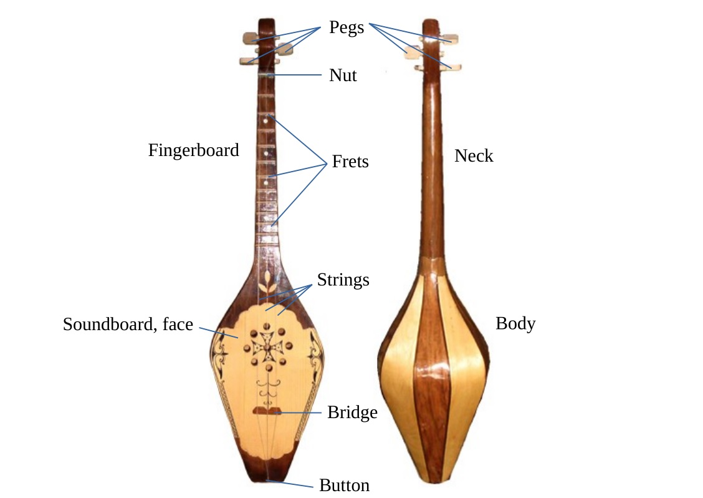

Where to get one and what to look for
Now that you've decided which panduri you want, let's discuss how to get one. If you have a host family or counterparts, I would recommend expressing to them that you are looking for a panduri. They will likely know someone who can help you. If you don't have a host family or counterparts, definitely ask your neighbors, coworkers, or friends for suggestions.
You can always get a cheap panduri at touristy places in big cities, like Tbilisi, Kutaisi, Batumi, Khashuri, Telavi, and so on. They'll be hanging in bazaars, or in stores on the street. You can walk in and point to a panduri and purchase it. These panduris will probably cost between 50 and 100 lari. You will likely get what you pay for.
If you want to get a higher quality panduri, I would try to find a luthier who specializing in making panduris. I've compiled a short list here with the help some Peace Corps volunteers of luthiers we have bought panduris from, their location, and other comments.
You might also consider refurbishing an old panduri, if you happen to have one lying around. Luthiers can change an old folk panduri into a chromatic one, or repair a damaged panduri.
Ask to play the panduri before buying it. Feel how heavy it is, what kind of finish is on the wood, what it sounds like when you pluck and strum it. Examine it all over, and when you're satisfied, enjoy your new panduri!
Panduri Luthiers
- Gocha Giladze – Akhmeta – tel: 595 93 02 74 – both folk and chromatic, custom options available at varying prices (like size, wood, peg material, fret material, strings, strap)
- Avto Gorava – Baghdati – tel: 599 18 52 85 – handmade
- Tamazi Oragvelidze – Village Shukhuti, Lanchkhuti – tel: 593 44 55 43
Things to consider
- Material of body – There are two main variants in builds that I have seen, the first build consisting of five separate pieces of wood glued together, and the second being carved from one large piece of wood. I personally prefer the aesthetic of the single piece of wood, but I don't know enough about panduri construction to say which is better.
- Material of soundboard – The soundboard is the piece of wood in the front. It's what amplifies the vibrations of the strings and creates the sounds you hear when you play your panduri. Look for imperfections; avoid dips or bumps.
- Wood grain – The wood grain should be as straight as possible. This will result in the best sound. My guitar teacher explained it to me this way: if the grains are straighter, then the resulting sound waves amplified by the vibrating soundboard will be more even, producing a higher quality sound.
- Material of pegs – I've seen wooden and metal pegs. I highly prefer the metal pegs; they resemble guitar pegs and have gears, and in my experience they hold much better than wooden pegs. However, high quality wooden pegs work as well. Just make sure that they hold the strings in place when you play.
- Material of frets – I have seen wood, metal, and plastic frets. I have noticed no difference in the sound, but I prefer the look of metal frets.
- Strings – The material should be nylon. Avoid panduris that are strung with strings of the same thickness. If the strings are of the same thickness, they will by necessity be of different tensions to reach the correct tuning, which will make it more difficult to play. I recommend either purchasing a panduri with the correctly gauged strings or restringing the panduri on your own. I have heard that the black strings tend to be more durable than the clear strings.
- Fingerboard – Look down the neck from the bridge to the nut, to make sure it's straight.
- Bottom button – This is the knob that you put the strings on. If you break a string, you will have to restring it from this point.
- Strap – Get one if you want one.
- Case – I recommend getting one to protect your instrument.